Acceptance
Acceptance explores how narratives transform as they move between
different mediums through a two-stage process: book to film, and
film back to book. Inspired by Georges Perec's Species of Spaces,
the project began as an experimental short film investigating
repetition, emotional stagnation, and the experience of feeling
trapped within familiar environments and routines. Using corridors,
staircases, and transitional spaces as recurring visual motifs, the
film creates a cyclical and abstract narrative rather than a
conventional storyline. The second stage translated the cinematic
work into a physical publication. Designed as an accordion-style
book, the final piece unfolds continuously, blurring the distinction
between beginning and end. One side presents stills from the film,
while the reverse mirrors them in inverted tones, creating a
parallel visual narrative that reflects the project's themes of
repetition, duality, and reflection. The work invites viewers to
navigate the publication non-linearly and form their own connections
between image, sequence, memory, and space.
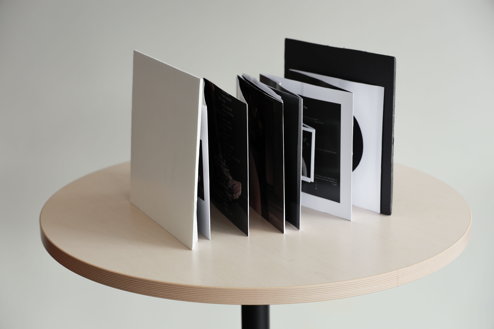
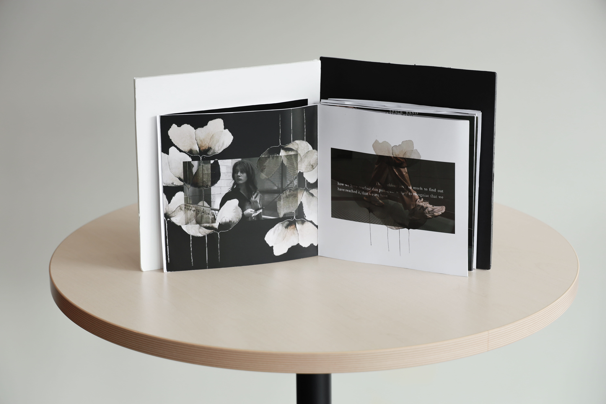
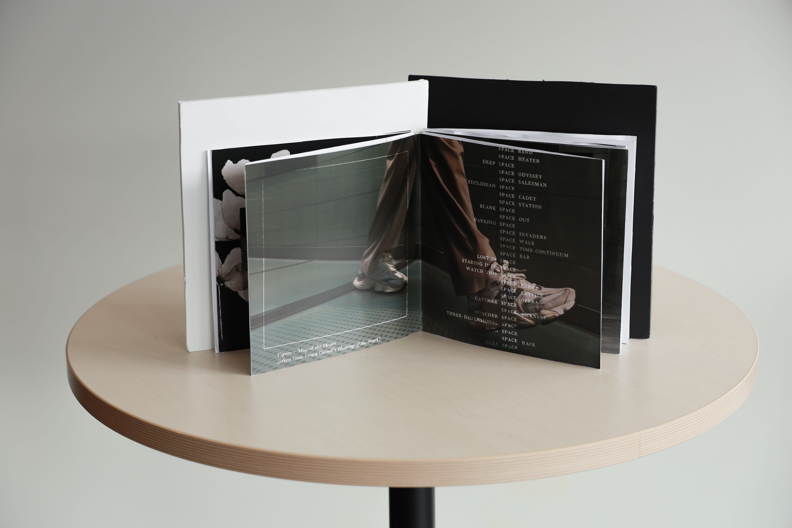
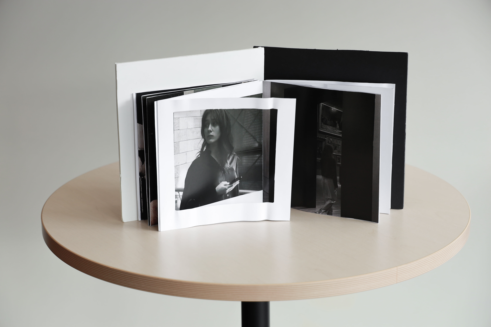
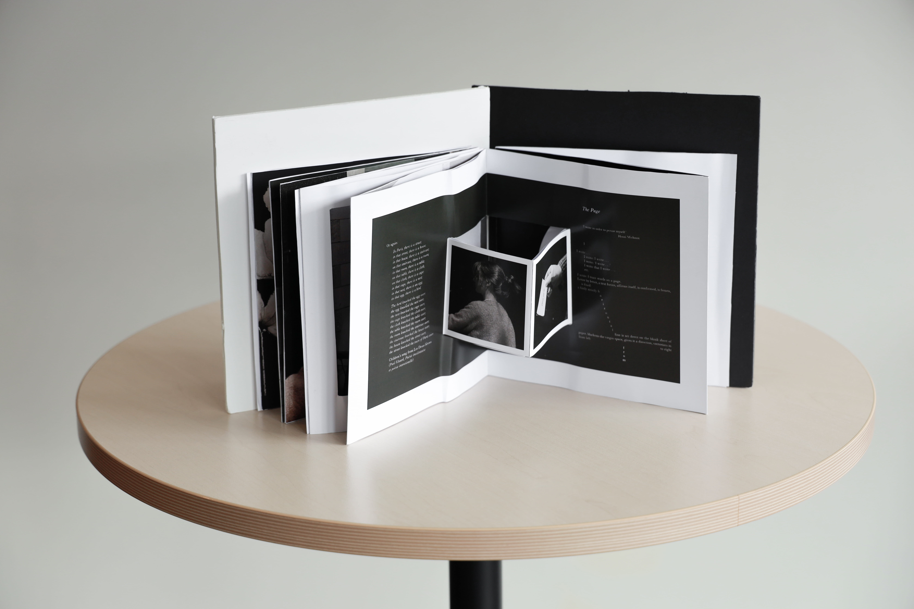
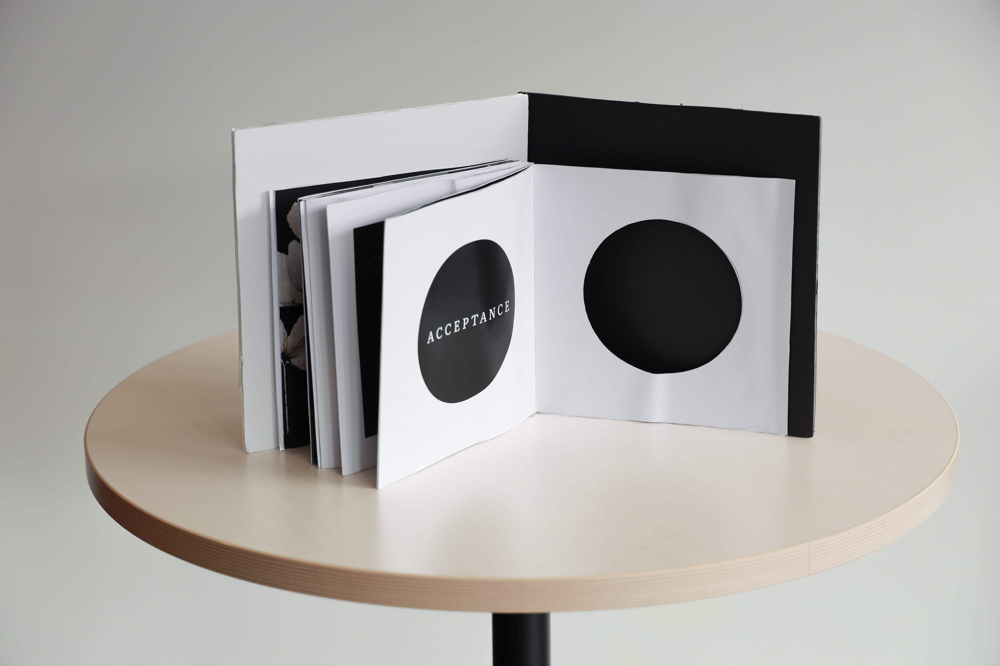
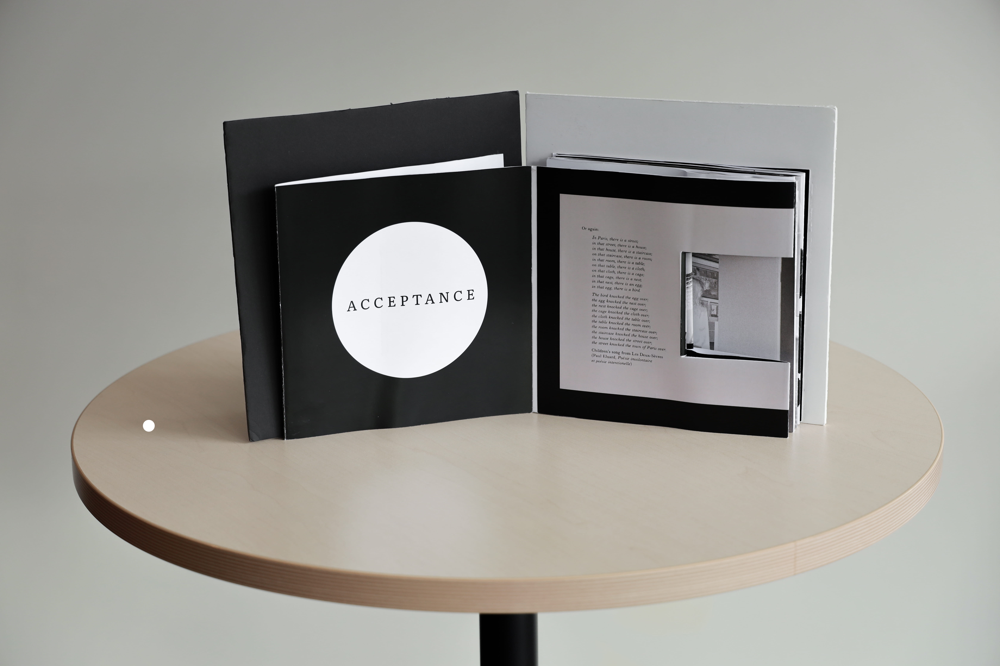
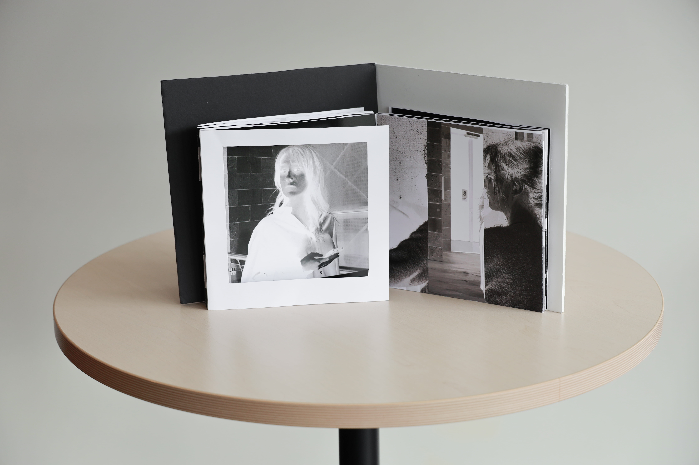
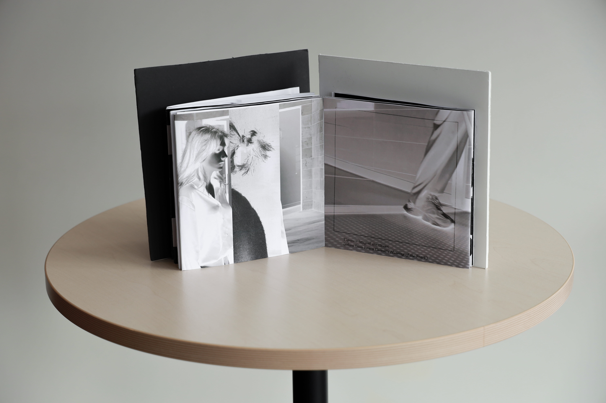
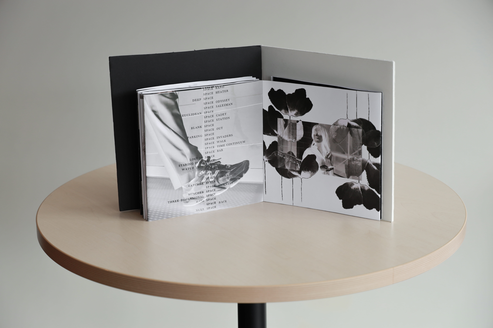
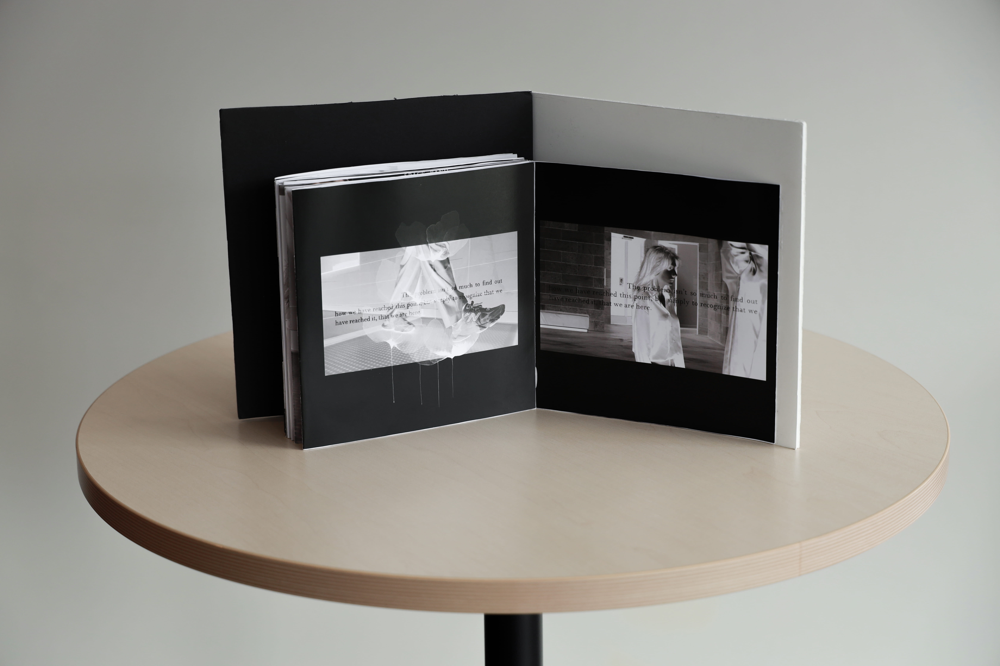
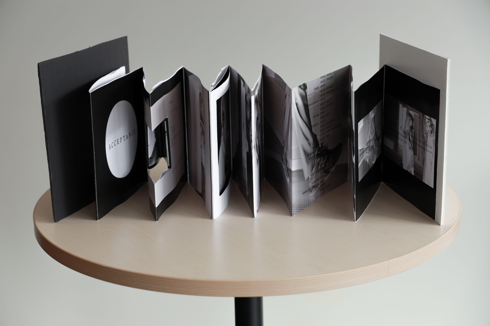
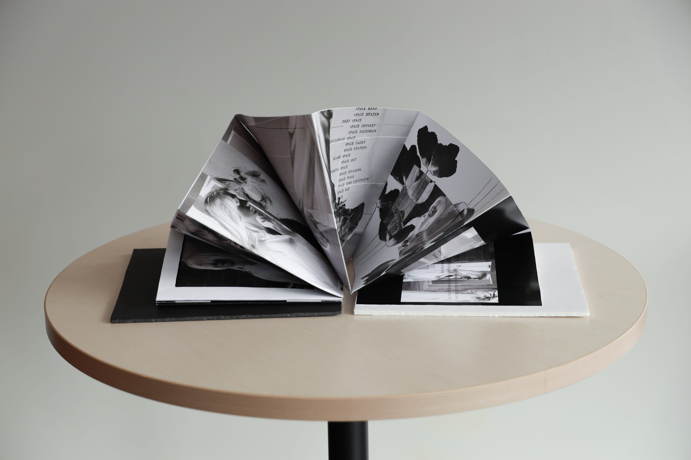
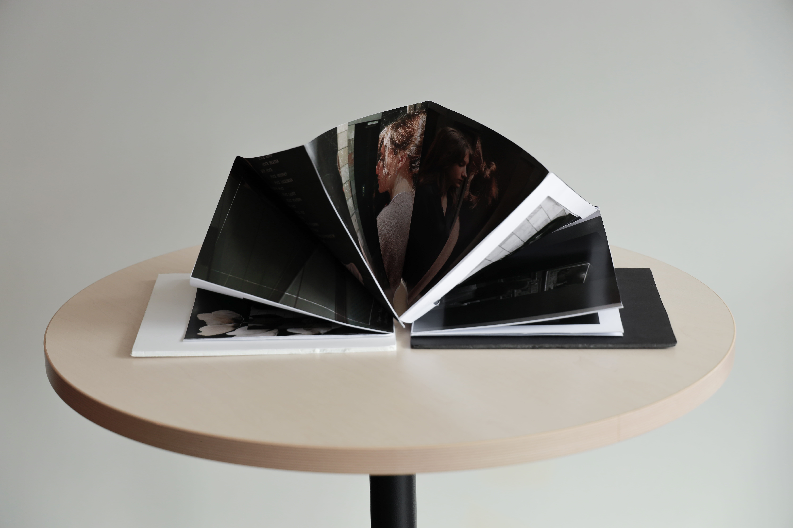
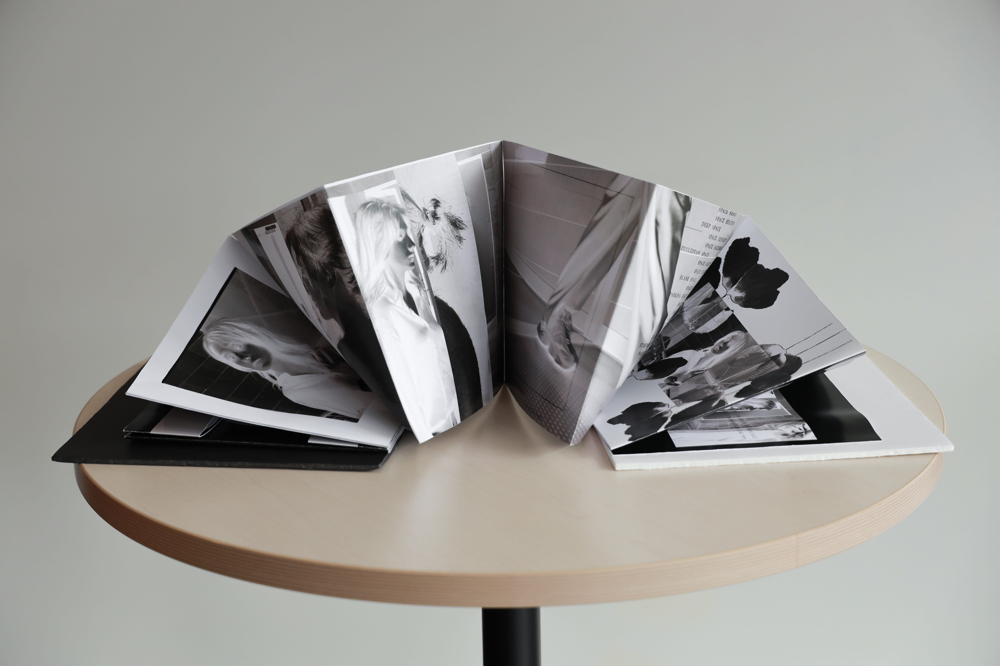